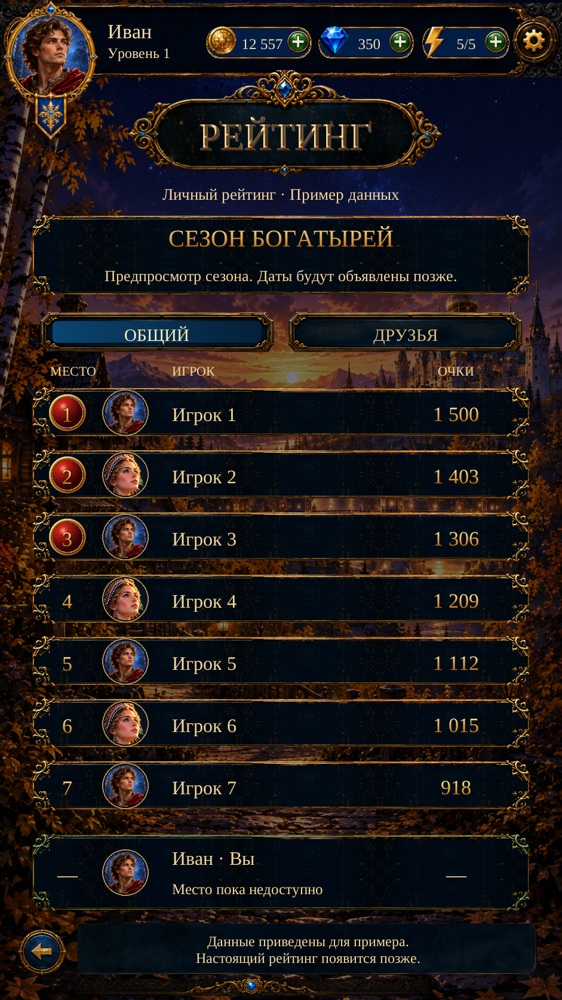

Individual Ranking · Личный рейтинг
Visual Page20 · R1. Actual Unity captures with live localized text and native controls. Standings are labelled examples; real player rank and Friends rankings remain unavailable. No dedicated original reference was found; this uses the current accepted visual family.
Implementation and checks · Design basis · Asset provenance

941×1672 · Русский — actual Unity Play Mode; isolated test save.7 ranking tests passed in the final run; 7 Event Detail regression tests also passed. No APK or physical-phone test. Existing artwork reused unchanged; no new Scenario calls or credits.